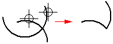

Draw a corner by trimming and extending elements
-
Choose the Trim Corner command .
-
Choose Sketching tab→Draw group→Trim Corner command .
-
Do one of the following:
-
Click each element you want to trim or extend.

-
Drag the cursor over one or more elements, then release the mouse button. The parts of the element over which you dragged the mouse remain. The other part of the elements are trimmed or extended as necessary.

Tip:You can draw only one corner at a time by dragging the cursor.
-